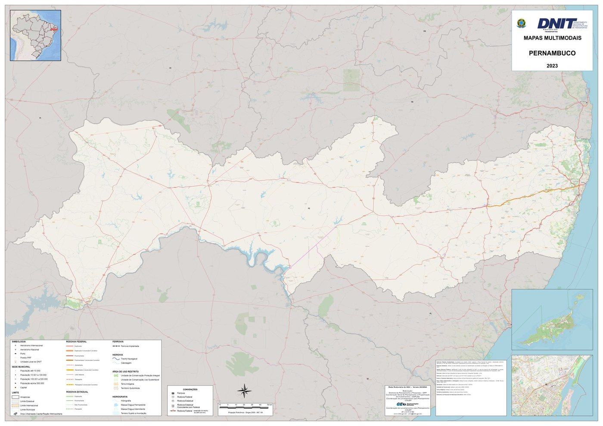

animação esquemática
blueprint 2.5D: passe o cursor nas camadas



★ projeto estrela2023 - 2025
Automação dos Mapas Multimodais
Transformei a produção dos mapas oficiais do DNIT em um atlas dirigido pelo banco: os 27 mapas em A0 saem sem diagramação manual.
Os Mapas Multimodais mostram rodovias, ferrovias, hidrovias, portos, aeródromos e áreas protegidas de cada UF e do Brasil. Cada estado tem forma e tamanho próprios, então a diagramação era feita mapa a mapa. Antes, o conjunto levava de 6 a 8 meses, em paralelo com outras funções.
- Medi os mapas já publicados e transformei dimensões e posições de cada elemento em regras de layout para o papel A0.
- Organizei os dados em PostgreSQL/PostGIS por esquemas temáticos e criei views por orientação de papel, com uma máscara que realça a UF da vez.
- Montei três layouts de atlas (paisagem, retrato e Brasil) em que posição, tamanho e escala de cada elemento são expressões lidas do banco.
- Programei a escala automática e os encartes especiais, como Fernando de Noronha e o Distrito Federal.
- Escrevi a NT 101/2023 e o manual para a equipe reproduzir o processo, e mantive o projeto até a versão 202410A do SNV.
- Atlas do QGIS com propriedades definidas por dados (CASE WHEN sobre atributos da view)
- Views de cobertura no PostGIS por orientação de papel
- Escala automática em passos de 1:25.000
- Regras de layout extraídas da medição dos mapas anteriores
- Geração automatizada dos 27 mapas a partir do banco: 26 de UFs (GO e DF juntos) e o do Brasil
- 20 UFs em paisagem e 6 em retrato, com a orientação guardada no banco
- NT 101/2023 e manual assinados por mim
- PostgreSQL
- PostGIS
- QGIS Atlas
- Expressões QGIS
- SQL
- SIRGAS 2000
- IBGE BC250